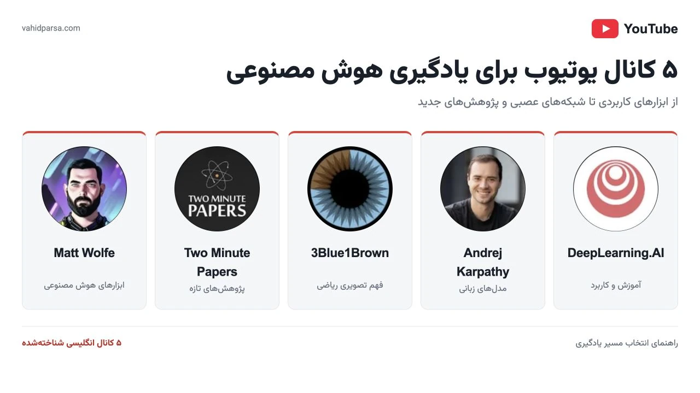
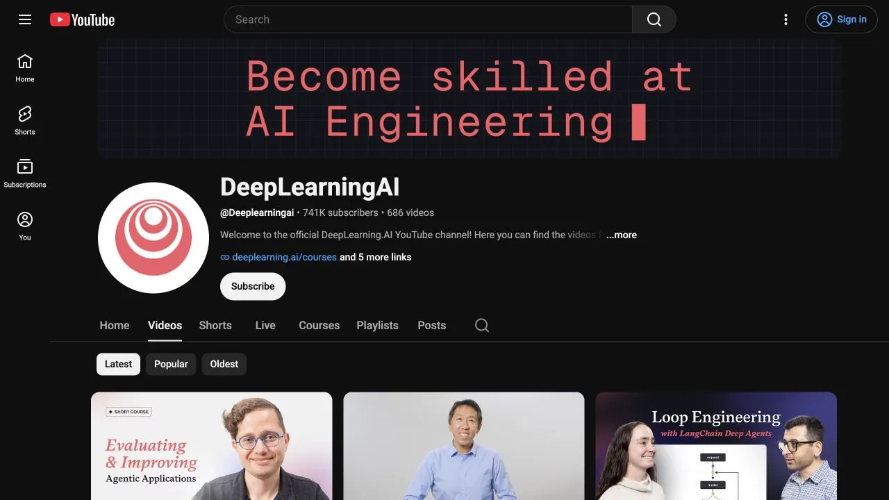
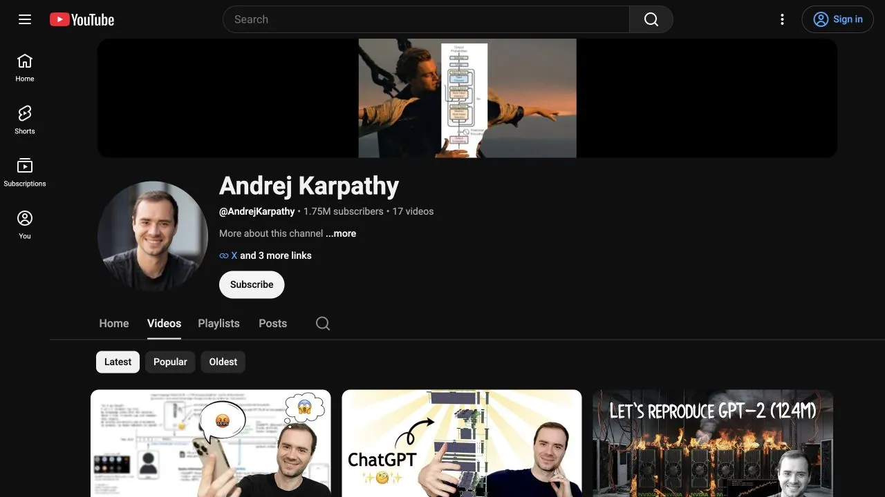
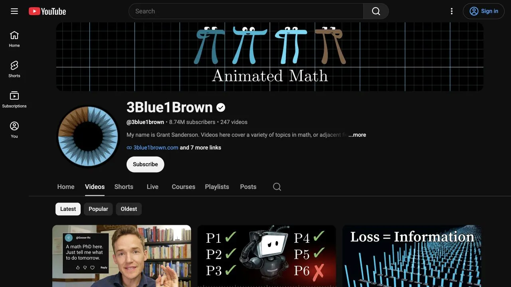
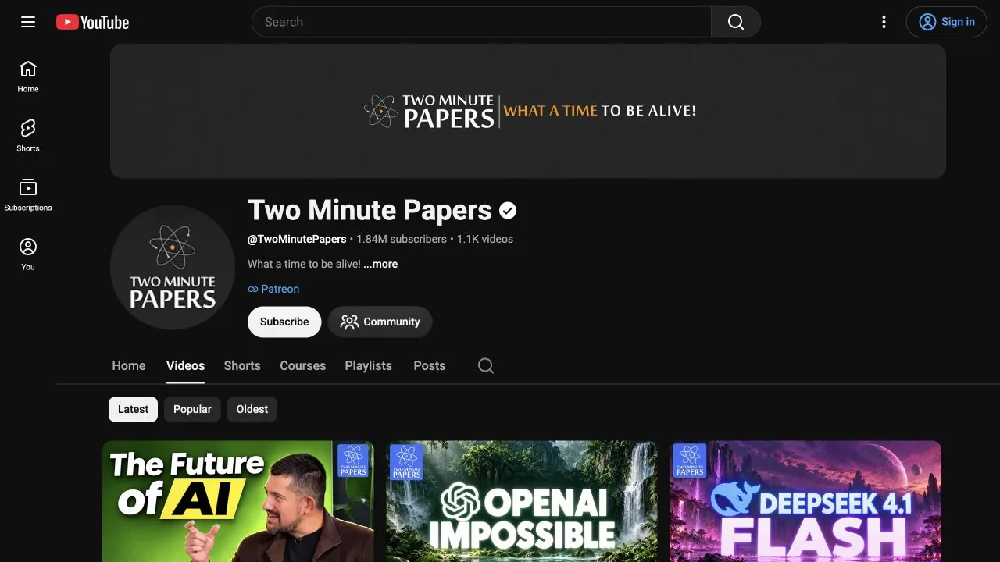
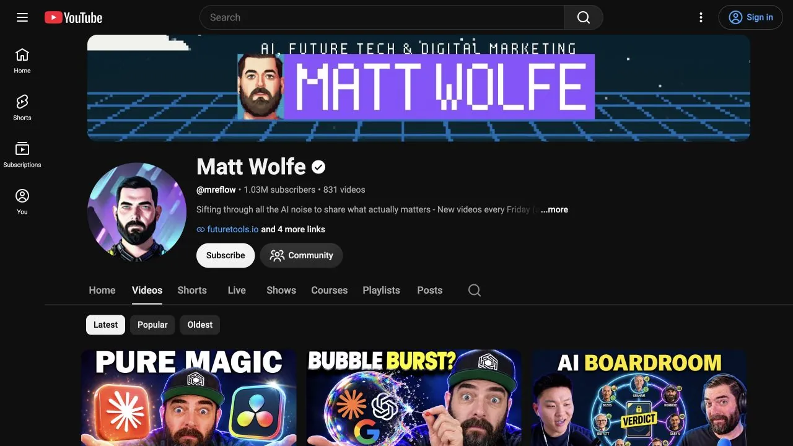

بهترین کانالهای آموزش هوش مصنوعی در یوتیوب؛ ۵ انتخاب انگلیسی برای یادگیری
معرفی ۵ کانال معروف انگلیسی برای یادگیری هوش مصنوعی در یوتیوب؛ مقایسه سطح آموزش، پیشنیازها و مسیر شروع از ابزارهای AI تا شبکههای عصبی.

کدام کانال برای یادگیری هوش مصنوعی مناسب توست؟
اگر عبارت «آموزش هوش مصنوعی» را در یوتیوب جستوجو کنی، از معرفی یک ابزار تولید تصویر تا پیادهسازی مدل زبانی با پایتون میبینی. هر دو به هوش مصنوعی مربوطاند، اما قرار نیست تو را به یک مهارت برسانند. مشکل خیلی وقتها کمبود منبع نیست؛ این است که قبل از انتخاب ویدیو، معلوم نکردهایم دنبال چه نتیجهای هستیم.
در این راهنما پنج کانال انگلیسی شناختهشده را انتخاب کردهام که هرکدام بخشی از مسیر را پوشش میدهند. این فهرست رتبهبندی مطلق نیست. اگر تولیدکننده محتوا هستی، انتخابت با کسی که میخواهد شبکه عصبی را از صفر بسازد فرق میکند. برای شروع هم لازم نیست هر پنج کانال را همزمان دنبال کنی.
معیار انتخاب این منابع، روشن بودن موضوع آموزش، امکان ادامه دادن یک مسیر مشخص و مکمل بودن محتوا بوده است. تعداد دنبالکننده بهتنهایی معیار کیفیت یادگیری نیست؛ مهمتر این است که بعد از دیدن ویدیو بتوانی چیزی را توضیح بدهی، آزمایش کنی یا بسازی.
| کانال | مناسب برای | پیشنیاز پیشنهادی |
|---|---|---|
| DeepLearning.AI | مباحث آموزشی و کاربردهای فنی هوش مصنوعی | وابسته به مجموعه؛ برای بخشهای فنی آشنایی با پایتون |
| Andrej Karpathy | درک مدلهای زبانی و ساخت شبکه عصبی | برای مسیر کدنویسی: پایتون و ریاضی پایه |
| 3Blue1Brown | فهم تصویری ریاضی و سازوکار شبکهها | ریاضی دبیرستان؛ آمادگی برای مرور مفاهیم |
| Two Minute Papers | آشنایی با پژوهشها و پیشرفتهای جدید | کنجکاوی علمی؛ آشنایی پایه با اصطلاحات |
| Matt Wolfe | کشف ابزارها و کاربردهای روزمره | برای بسیاری از ویدیوها بدون برنامهنویسی |
کانال DeepLearning.AI؛ برای آشنایی با مسیرهای جدی یادگیری

کانال رسمی DeepLearning.AI ترکیبی از ویدیوهای آموزشی یادگیری ماشین، رویدادهای ضبطشده و معرفی مباحث و دورههاست. توضیح خود کانال هم به ویدیوهای برنامههای آموزشی آن در کورسرا و رویدادها اشاره میکند. این تنوع کمک میکند از معرفی یک موضوع به بحثهای فنیتر برسی؛ البته هر ویدیوی کانال یک درس کامل نیست.
این منبع برای کسی مناسب است که میخواهد فراتر از نام ابزارها برود و با مفاهیم و کاربردهای هوش مصنوعی آشنا شود. پیشنهاد من این است که از بخش فهرستهای پخش، یک موضوع محدود انتخاب کنی و ترتیب درسها را نگه داری. تماشای پراکندهٔ معرفی دورهها معمولاً مسیر یادگیری منسجمی ایجاد نمیکند.
از کجا شروع کنی؟ ابتدا یک مجموعه متناسب با سطح خودت پیدا کن، توضیحات آن را بخوان و پیشنیازها را بررسی کن. برای محتوای فنی، داشتن محیط اجرای پایتون مفید است. رایگان بودن ویدیوهای عمومی یوتیوب به این معنا نیست که تمام دورهها، تمرینها یا گواهیهای پلتفرمهای مرتبط رایگاناند؛ شرایط هر دوره را جداگانه بررسی کن.
کانال Andrej Karpathy؛ برای فهم عمیق مدلهای زبانی

آندری کارپاتی در وبسایت رسمیاش آموزشهای خود را به دو مسیر تقسیم کرده است: مسیر فنی و مسیر مخاطب عمومی. همین تفکیک، انتخاب نقطه شروع را ساده میکند. برای شناخت مدلهای زبانی، میتوانی سراغ Intro to Large Language Models یا Deep Dive into LLMs like ChatGPT بروی؛ برای ساختن، مجموعهٔ Neural Networks: Zero to Hero مسیر متفاوتی دارد.
ارزش این کانال برای یادگیرندهٔ فنی، دیدن ارتباط ایده و پیادهسازی است. در آموزشهای ساخت شبکه، فقط با نتیجهٔ نهایی روبهرو نمیشوی؛ میتوانی منطق کد را دنبال کنی و با تغییر آن، فهمت را محک بزنی. مسیر عمومی هم کمک میکند پیش از درگیر شدن با جزئیات، تصویر روشنتری از مدل زبانی داشته باشی.
از کجا شروع کنی؟ اگر برنامهنویس نیستی، ابتدا یکی از ویدیوهای عمومی را در چند جلسه ببین. اگر پایتون میدانی، اولین درس Zero to Hero دربارهٔ ساخت micrograd انتخاب مناسبی برای تمرین است. کد را خودت اجرا کن؛ چند ساعت تماشای پیوسته، جای بازسازی یک بخش کوچک را نمیگیرد. مسیرهای معرفیشده در وبسایت کارپاتی را هم میتوانی ببینی.
کانال 3Blue1Brown؛ وقتی میخواهی بفهمی پشت فرمولها چیست

3Blue1Brown کانال گرانت سندرسون دربارهٔ ریاضیات است؛ بنابراین همهٔ ویدیوهایش آموزش هوش مصنوعی نیستند. ویژگی اصلی آن، استفاده از تصویر و انیمیشن برای توضیح ایدههاست. در وبسایت رسمی، موضوعاتی مثل شبکههای عصبی، جبر خطی و حساب دیفرانسیل دستهبندی شدهاند که برای فهم یادگیری عمیق به هم مرتبط میشوند.
اگر واژههایی مثل وزن، گرادیان و یادگیری را شنیدهای، اما هنوز نمیتوانی ارتباطشان را توضیح بدهی، این سبک آموزش میتواند کمککننده باشد. مزیتش این است که پیش از حفظ کردن فرمول، فرصت پیدا میکنی شهود بسازی. با این حال، دیدن یک انیمیشن بهتنهایی مهارت پیادهسازی ایجاد نمیکند و بهتر است آن را کنار تمرین یا آموزش کدنویسی قرار بدهی.
از کجا شروع کنی؟ با ویدیوی But what is a neural network? و مجموعهٔ شبکههای عصبی شروع کن. هرجا بردار یا مشتق نامفهوم شد، همان مفهوم را از مجموعههای ریاضی مرور کن. تمرین ساده: بعد از تماشای یک قسمت، روی کاغذ بکش که ورودی چطور به خروجی تبدیل میشود و وزنها در این میان چه نقشی دارند. بخش شبکههای عصبی در سایت رسمی نقطهٔ شروع خوبی است.
کانال Two Minute Papers؛ برای دنبالکردن پیشرفتهای هوش مصنوعی

Two Minute Papers با اجرای کاروی ژولنایفهر، پژوهشهای علمی را به زبان قابلفهمتری معرفی میکند. در معرفی رسمی پروژه نیز هدف، قابلدسترس کردن مقالههای پژوهشی برای مخاطبان بیشتر عنوان شده است. این کانال برای دیدن ایدههای تازه و نتایج پژوهشها جذاب است، بهخصوص وقتی هنوز نمیدانی کدام موضوع را عمیقتر دنبال کنی.
جای این کانال در برنامهٔ یادگیری، بیشتر کنار درسهای اصلی است. گزارش یک پیشرفت علمی لزوماً آموزش استفاده از محصولی آماده نیست؛ ممکن است نتیجه در محیط پژوهشی به دست آمده باشد یا هنوز ابزار عمومی سادهای برای آن وجود نداشته باشد. همچنین نام کانال به این معنا نیست که تمام ویدیوها دقیقاً دو دقیقهاند.
از کجا شروع کنی؟ موضوعی نزدیک به علاقهات انتخاب کن؛ مثلاً تولید تصویر یا مدلهای زبانی. بعد از ویدیو، مسئلهٔ پژوهش، نتیجه و محدودیت آن را در سه جمله بنویس. اگر خواستی بیشتر بدانی، منبع اصلی معرفیشده در توضیحات را دنبال کن. این عادت کمک میکند تفاوت «نمایش یک قابلیت» و «قابلاستفاده بودن آن در پروژهٔ تو» را دقیقتر ببینی.
کانال Matt Wolfe؛ برای کشف ابزارهای کاربردی هوش مصنوعی

مت ولف در کانالش به ابزارها، خبرها و کاربردهای هوش مصنوعی میپردازد. وبسایت رسمی او نیز به همین تمرکز و پروژهٔ FutureTools اشاره دارد. برای تولیدکننده محتوا، صاحب کسبوکار یا کسی که میخواهد امکانات تازه را بشناسد، این جنس محتوا نقطه ورود قابلدسترستری از آموزش ریاضی شبکههای عصبی است.
انتظار درست از این کانال، پیدا کردن ایده برای استفاده و آزمایش ابزارهاست. آن را جایگزین دورهٔ مهندسی یادگیری ماشین در نظر نگیر. ابزارها هم سریع تغییر میکنند؛ ممکن است رابط کاربری، قیمت یا شرایط دسترسی امروز با زمان ضبط ویدیو متفاوت باشد. پیش از انتخاب یک ابزار برای کار جدی، نسخهٔ فعلی آن را بررسی کن.
از کجا شروع کنی؟ بهجای دنبال کردن همهٔ خبرها، یک مسئلهٔ مشخص انتخاب کن؛ مثلاً کوتاه کردن فرایند تدوین یا آمادهسازی ایدهٔ محتوا. یک آموزش مرتبط ببین و نتیجه را روی فایل آزمایشی خودت بسنج. زمان صرفشده، کیفیت خروجی و هزینه را یادداشت کن. این مقایسه برای تصمیمگیری مفیدتر از جمع کردن فهرست بلند ابزارهایی است که هیچکدام را استفاده نکردهای.
برای شروع، کدام مسیر را انتخاب کنیم؟
اگر هدفت استفاده از هوش مصنوعی در کار روزمره است، از یک آموزش کاربردی مت ولف شروع کن و برای فهم محدودیتهای مدلها، یکی از ویدیوهای عمومی کارپاتی را کنار آن بگذار. لازم نیست قبل از اولین تجربهٔ عملی، تمام مباحث ریاضی را تمام کنی.
اگر میخواهی وارد مسیر فنی شوی، ترکیب آموزش تصویری 3Blue1Brown و تمرینهای کدنویسی کارپاتی مناسبتر است. سپس بر اساس پروژهات، از منابع DeepLearning.AI کمک بگیر. Two Minute Papers را برای آشنایی با جهت پیشرفت پژوهشها نگه دار؛ مصرف خبر نباید زمان تمرین اصلی را بگیرد.
یک برنامهٔ چهار هفتهای سبک
- هفته اول: هدف را بنویس و فقط یک منبع اصلی انتخاب کن. خروجی را مشخص کن؛ مثلاً توضیح روشن سازوکار مدل زبانی یا اجرای اولین نمونهٔ کد.
- هفته دوم: یک آموزش را بخشبخش ببین. بعد از هر بخش، بدون نگاه کردن به ویدیو، ایده را توضیح بده یا مرحله را تکرار کن.
- هفته سوم: تمرین را تغییر بده. ورودی تازه، مثال متفاوت یا مسئلهای نزدیک به کار خودت انتخاب کن تا صرفاً مقلد مراحل نباشی.
- هفته چهارم: نتیجه را بررسی کن. چه چیزی کار میکند؟ کجا اشتباه کردهای؟ فقط برای همین شکاف، منبع مکمل پیدا کن.
اگر با توضیح فارسی راحتتری، در بخش آموزشهای رایگان یوتیوب وحید پارسا هم آموزشهای کاربردی را پیدا میکنی. برای انتخاب موضوع بعدی، مسیرهای یادگیری هوش مصنوعی و وایب کدینگ را ببین. این منابع میتوانند در کنار آموزشهای انگلیسی استفاده شوند.
چطور از ویدیو دیدن به یادگیری واقعی برسیم؟
قبل از پخش ویدیو، یک سؤال مشخص بنویس. «میخواهم دربارهٔ هوش مصنوعی بدانم» خیلی گسترده است؛ «میخواهم بفهمم چرا مدل ممکن است پاسخ اشتباه بدهد» قابل پیگیری است. در پایان، به همان سؤال برگرد و بررسی کن آیا واقعاً جوابش را میدانی.
برای زبان انگلیسی، لازم نیست همهٔ جملهها را بینقص بفهمی. اصطلاحات پرتکرار را در یک یادداشت دو زبانه ثبت کن و در صورت وجود، از زیرنویس استفاده کن. ترجمهٔ خودکار ممکن است اصطلاح فنی را اشتباه منتقل کند؛ نام اصلی مفاهیمی مثل token و gradient را کنار معادل فارسی نگه دار.
هنگام انتخاب آموزش ابزارمحور، تاریخ ویدیو و توضیحات را بررسی کن. اگر هدف یادگیری مفهوم پایه است، قدیمی بودن همیشه ایراد نیست؛ اما برای قیمت، امکانات سرویس یا روش اتصال به یک ابزار، جزئیات نسخه اهمیت دارند. هر هفته هم برای تمرین وقت مشخص بگذار؛ اگر فقط فرصت یک کار را داری، ادامه دادن یک پروژهٔ کوچک اغلب از شروع چند فهرست پخش تازه مفیدتر است.
پرسشهای رایج دربارهٔ آموزش هوش مصنوعی در یوتیوب
بهترین کانال آموزش هوش مصنوعی برای مبتدیها کدام است؟
برای کار با ابزارها، ویدیوهای کاربردی مت ولف نقطه شروع مناسبیاند. برای شناخت مدلهای زبانی بدون ورود مستقیم به کدنویسی، مسیر عمومی کارپاتی را ببین. انتخاب نهایی به هدفت وابسته است؛ مقدماتی بودن یک ویدیو را از موضوع و پیشنیاز آن تشخیص بده.
آیا برای یادگیری هوش مصنوعی باید برنامهنویسی بلد باشیم؟
برای بسیاری از کاربردهای روزمرهٔ ابزارها، نه. اما برای ساخت و آموزش مدل، تحلیل کد و پیش رفتن در مسیر فنی، آشنایی با پایتون و مبانی ریاضی لازم میشود. این دو مسیر را از ابتدا از هم تشخیص بده تا منابع نامتناسب انتخاب نکنی.
آیا تمام آموزشهای این کانالها رایگاناند؟
ویدیوهای عمومی کانالها را میتوان در یوتیوب تماشا کرد؛ اما دورهٔ جداگانه، عضویت، گواهی یا ابزاری که در ویدیو معرفی میشود ممکن است هزینه داشته باشد. پیش از ثبتنام یا خرید، شرایط منبع اصلی را بخوان.
آیا فقط با یوتیوب میتوان متخصص هوش مصنوعی شد؟
یوتیوب منبع آموزش خوبی است، اما تماشای ویدیو بهتنهایی کافی نیست. تمرین، مستندات، حل مسئله، بررسی خطا و پروژههای قابل ارزیابی بخش ضروری یادگیریاند. معیار پیشرفتت را توانایی انجام کار قرار بده، نه تعداد ویدیوهای تمامشده.
برای انتخاب ابزار مناسب پروژهٔ بعدی، مقایسهٔ بهترین هوش مصنوعی برای کدنویسی را هم بخوان؛ این راهنما به انتخاب ابزار در کنار مسیر یادگیری کمک میکند.
یک کانال انتخاب کن؛ یک خروجی بساز
برای شروع، لازم نیست همهٔ منابع را ذخیره کنی. یک هدف، یک آموزش متناسب و یک تمرین کوچک کافی است. اگر میخواهی با رویکرد من به آموزش و ساخت کسبوکار دیجیتال آشنا شوی، صفحهٔ دربارهٔ من را ببین. برای پیشنهاد موضوع آموزشی هم میتوانی از صفحهٔ تماس پیام بدهی.
دیدن آموزشهای رایگان فارسی ↗